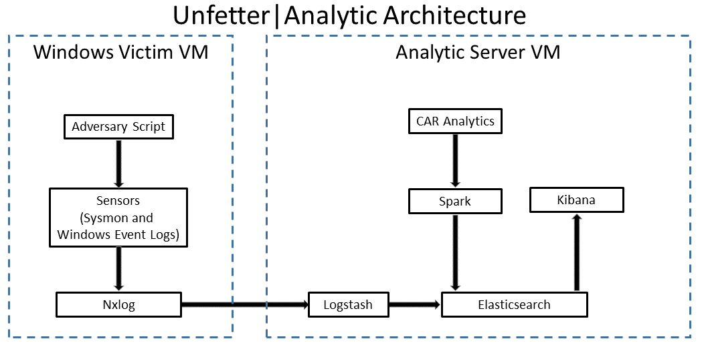

This reference implementation provides a framework for collecting events from a client machine (Windows 7), and performing Cyber Analytics Repository (CAR) analytics to detect potential adversary activity.
On the left-hand side of the diagram, you see the Windows System, or the "victim machine." NxLog ships standard Windows events to the Unfetter|Analytic system. The Windows system, once built, runs Microsoft Sysmon.
On the right, the Unfetter|Analytic server is running an Elasticsearch, Logstash, Kibana software stack and Apache Spark as the main analytic system. Event logs from the victim system and generated alerts are stored in Elasticsearch and are viewable through Kibana or through the Elasticsearch head plugin.
This system is not designed to be used in production as it stands. Architectural decisions were made to make it easier to collect and analyze data, as opposed to the more robust reliability, security, and scalability requirements needed in a production system. The system was designed to make personalized data source additions easier for experimentation purposes, and the virtual machine is fully customizable. A production environment would utilize components that are the same or similar to what is contained in the Unfetter|Analytic virtual machine: a backend data store (such as Elasticsearch), log parsing (such as Logstash), and a user interface (such as Kibana). Depending on organization-specific requirements, features that are not in the Unfetter|Analytic VM (e.g., a durable message queue, such as Apache Kafka) may need to be added.